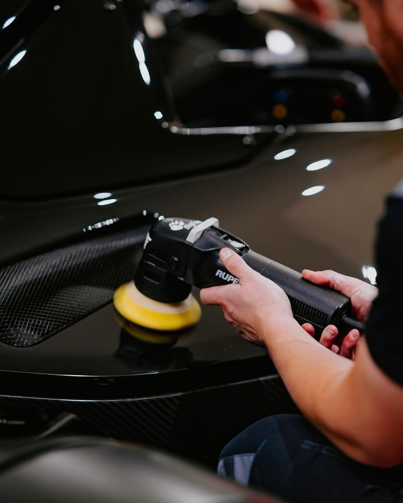
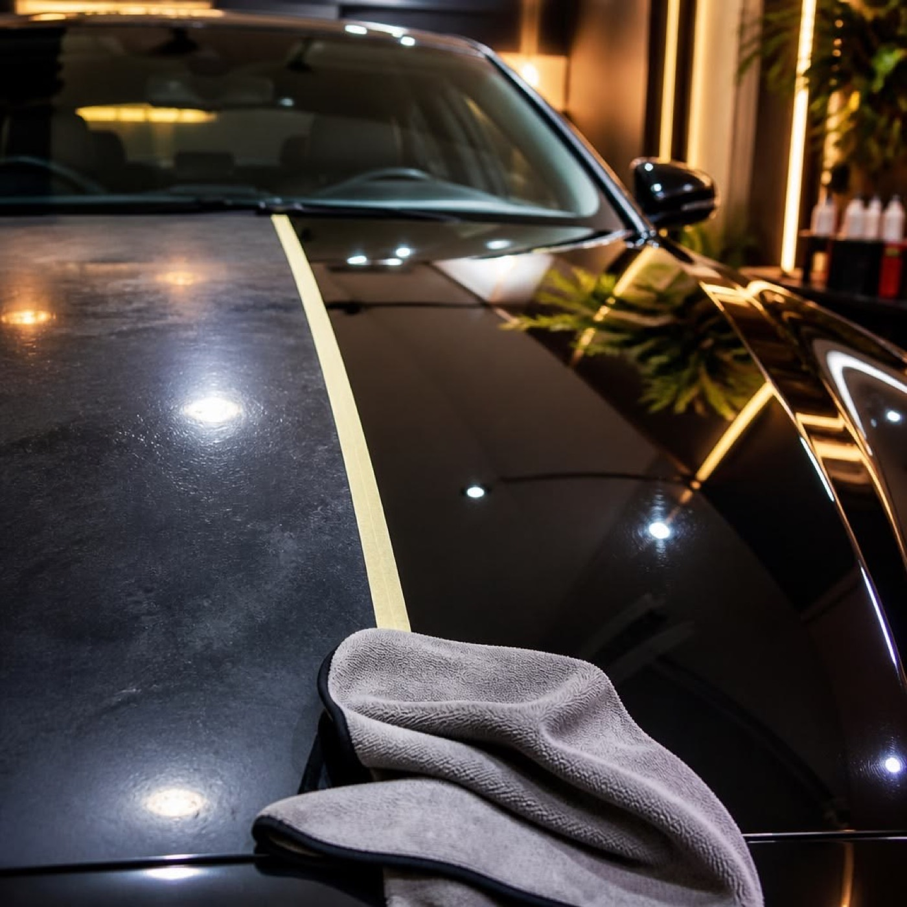
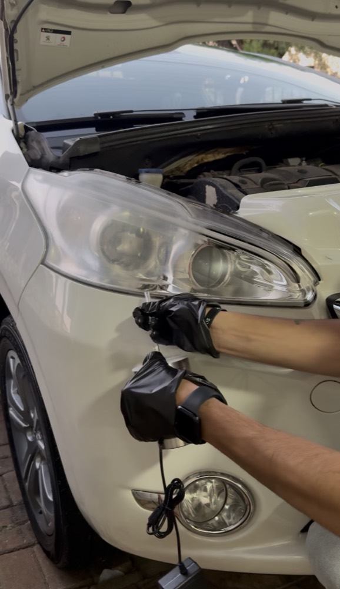
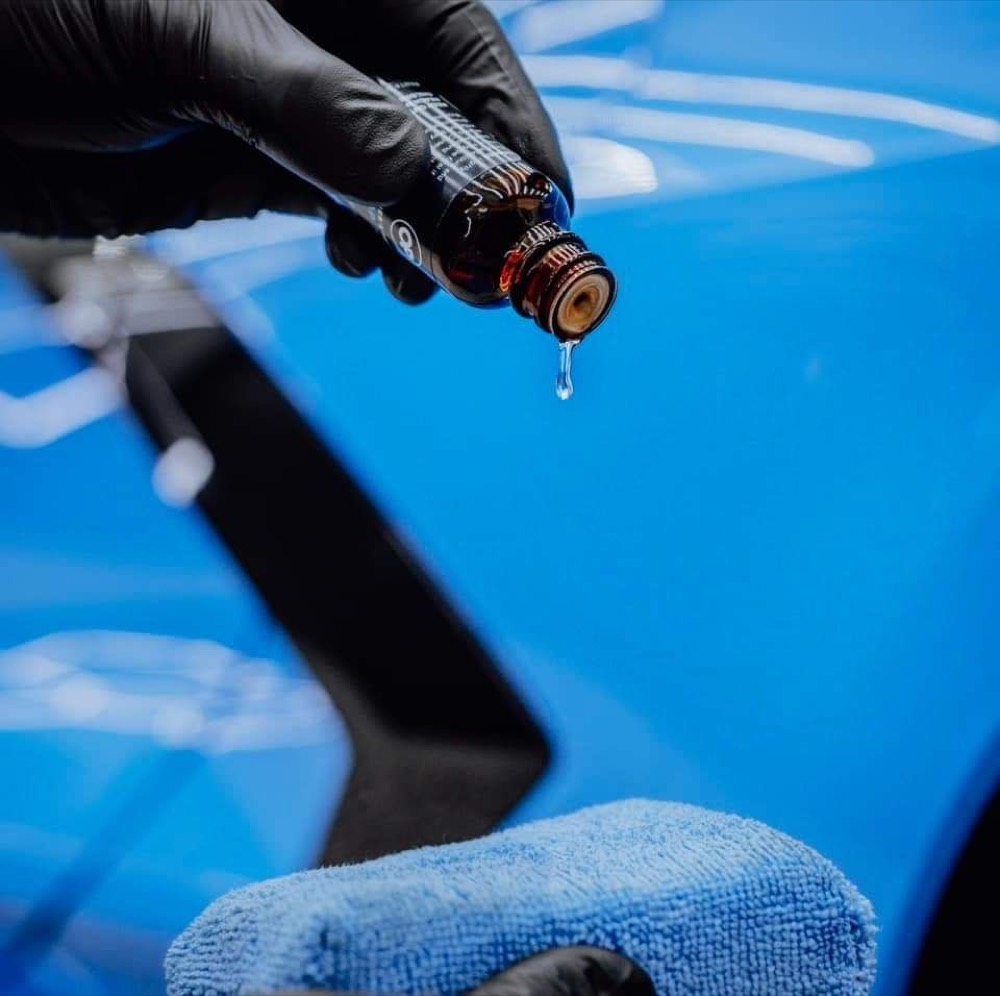
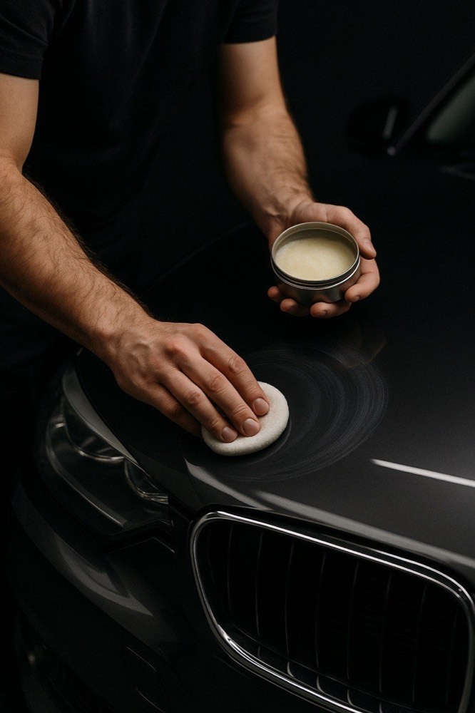
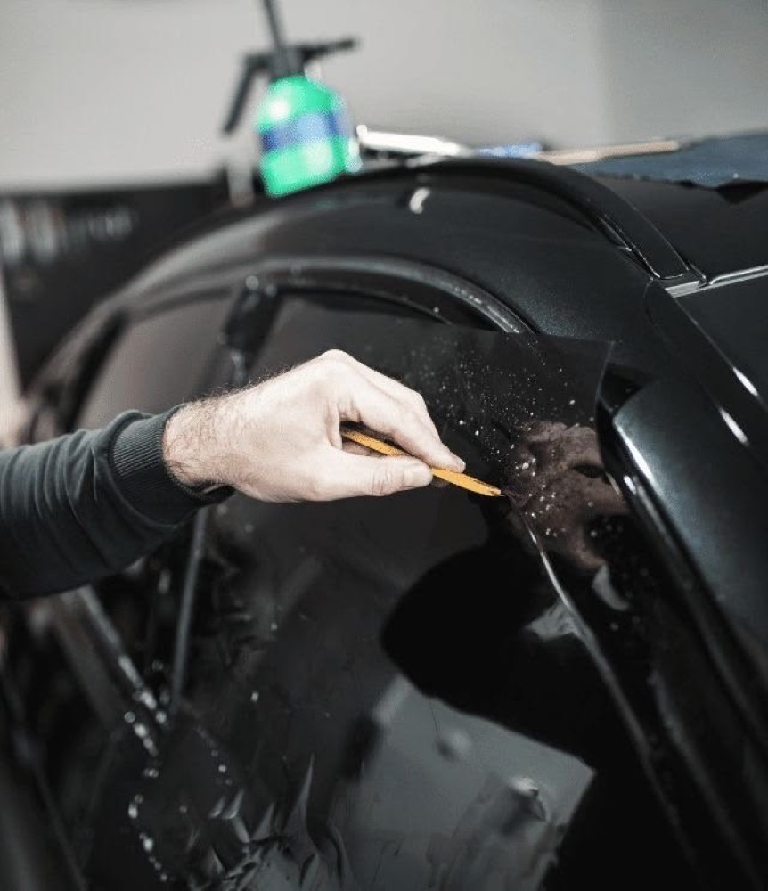
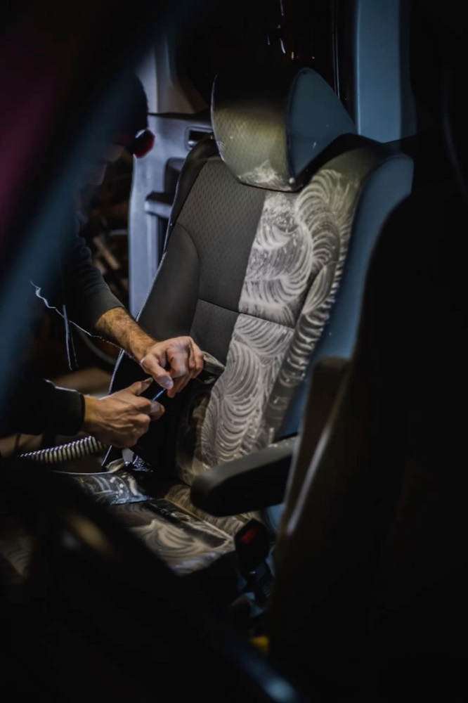
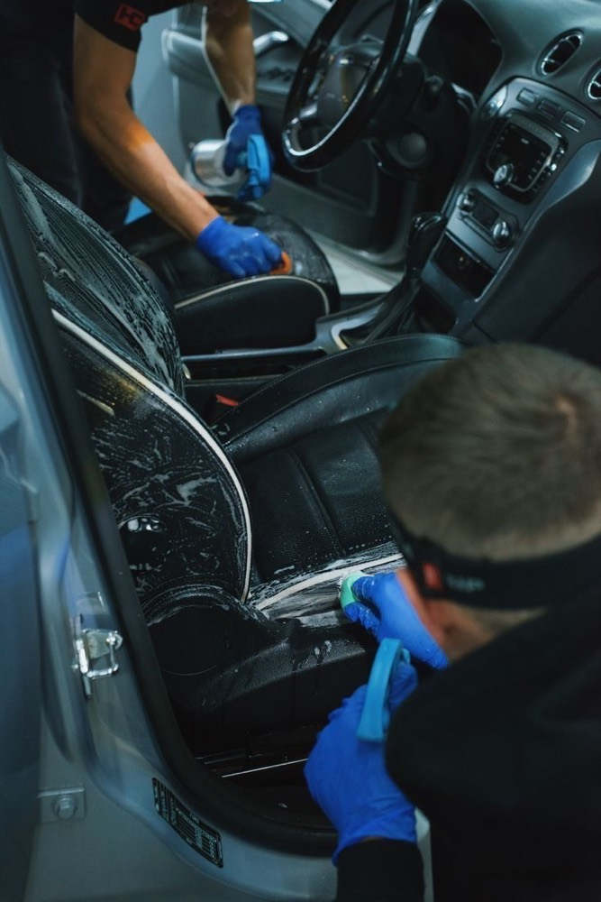
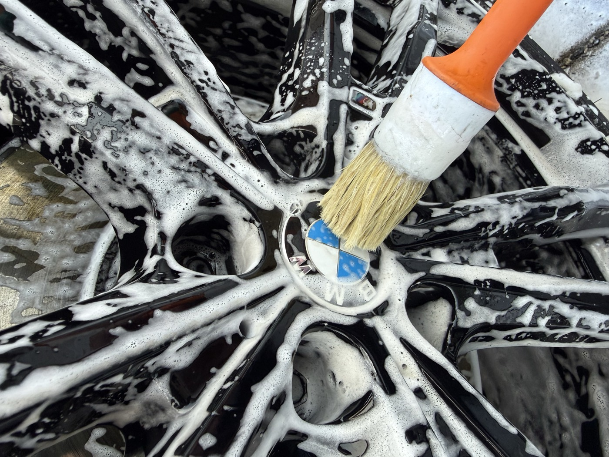

Polimento técnico
Remove os riscos finos, as marcas circulares de lavagem e aquele aspecto embaçado. A cor volta a ficar viva e o reflexo, nítido.
- Tempo1 a 2 dias
- ParaPintura opaca ou riscada
Chapecó · SC — Jardim América
Polimento, vitrificação e limpeza interna com um nível de acabamento que você só percebe quando vê o carro pronto. Arraste a imagem e veja a diferença.

Do polimento à proteção de pintura. Feito na ordem certa, sem pular etapa.
Tira risco, marca e opacidade da pintura. Vem sempre antes da proteção: de nada adianta proteger um risco por cima.

Remove os riscos finos, as marcas circulares de lavagem e aquele aspecto embaçado. A cor volta a ficar viva e o reflexo, nítido.

Tira o amarelado e a opacidade da lente. Volta a iluminar de verdade à noite — e some com aquele ar de carro velho na frente.
Faz o brilho durar. É o que separa um carro que fica bonito por duas semanas de um que fica bonito por anos.

Uma camada de proteção sobre a pintura. A cor ganha profundidade, a sujeira gruda menos e lavar o carro fica bem mais fácil.

Na chuva a água vira bolinha e escorre levando a sujeira junto. É assim que você vê que a vitrificação está funcionando.

Película transparente que leva a pedrada no lugar da pintura. Ideal no capô e para-choque de quem pega estrada com frequência.

Proteção mais simples, com brilho bonito e aquele toque liso na mão. Boa opção para manter o carro entre um serviço e outro.

Menos calor dentro do carro, menos desbotamento no painel e nos bancos. Aplicação dentro da faixa permitida por lei.
Por dentro conta tanto quanto por fora. Banco, carpete, painel e motor — a parte que você vê todo dia ao entrar.

Limpeza profunda de bancos, carpete e forros. Sai a sujeira encardida, o cheiro ruim e aquelas manchas que o aspirador não tira.

Limpeza e hidratação com produto próprio para couro. Mantém macio e evita o ressecamento que com o tempo vira rachadura.

Lavagem feita com calma e técnica certa, sem arrastar sujeira na pintura. É o contrário da lavagem de esquina que vai riscando o carro.

Limpeza do motor com a parte elétrica protegida. Ajuda a enxergar vazamento e faz diferença na hora de vender o carro.
Do primeiro contato até a entrega, é assim que funciona.
Você manda fotos pelo WhatsApp ou passa aqui. Eu vejo como está a pintura e te digo o que vale fazer — e o que não precisa.
Reservo o dia para o seu carro. Como atendo um por vez, ele não fica esperando na fila enquanto eu cuido de outros.
Cada etapa na ordem certa, sob luz forte — que é onde dá para enxergar o risco que a luz do dia esconde.
Você recebe as fotos do antes e depois e eu explico como lavar daqui pra frente, para o resultado durar.
Mensagens que recebi de clientes depois de entregar o carro.
Sempre um cuidado imenso com o cliente, cuida do veículo como fosse seu, detalhista, capricho nem se fala, muito obrigado pelo cuidado do meu carro!
Então mano, venho agradecer pelo serviço, qualidade. Fiquei muito satisfeito com teu trabalho. Sucesso!
Seu retorno me ajuda a melhorar. Depois que pegar o carro, me conte o que achou.